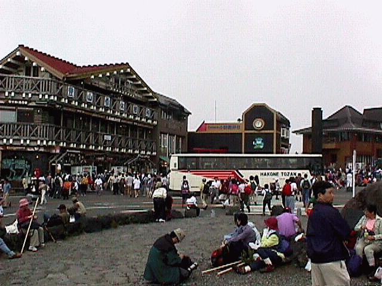
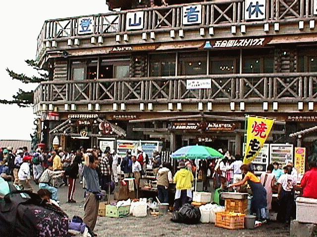

August (22nd + 23rd) 1998. Mt. Fuji Trip No. 2
(organised by Franz Gingl, and the now infamous "Franz Tours")
Climbing Fuji-san - Hike or Pilgrimage?
by Dr. Franz Gingl
Saturday began early, but everybody was there in time, we met Agnieszka at Arakawaoki Station and Emma S. and companions at Shijuku. The ticket office and the bus stop were easily found. Heavy traffic on the express way, stop and go, time to sleep. We arrived with a minor delay at 11:50 (scheduled arrival time was 10:10), Hubert had to wait for quite a while. As suggested by various hiking experts, we took a one-hour break to get used to the altitude (and to get a first idea of the "crowd" we could expect on our way up), had lunch and got ready for climbing at 1:00pm.
We arrived at our destination "Fuji-san-Hoteru" at about 5:00pm (+/-). The first technical challenge was to prevent Emma D and Bronwyn to make the top straight away (Thanks to Emma S). Our dinner was beef curry - the menu was written not only on the door but also on a large bucket that was used as trash can. The good news: the portions were small. 8:30 pm or so, after a beer,and maybe after surviving a visit to the toilet: Goto futon. They were a bit sticky, quite a bit, actually. Anyway, it would have been much worse at higher temperatures.
The night was short as the one before: We got up at 1:00am, received our lunch pack and tried to gather at the entrance. People everywhere, and it was already difficult to get out of the hut. The line of climbers passed right in front of the door. At about 2:00, after a cup of coffee, everybody was ready to queue for the top, and it took some two hours and a couple of minutes to get there. It wasn't too cold on top of Fuji-san but windy enough to make you freeze during one hour of waiting. Time for watching the activities at the shrine: climbers getting stamps, having their sticks burned or buying "Eternal Luck". Finally, the sun showed up - not a very special sunrise, with clouds at the horizon, or special maybe because hundreds or thousands of people around you are looking in the same direction? I'm sure everybody's seen better ones before (I suspect that Japanese and Westerners don't see the same thing watching this sunrise, gomenasai).
Immediately after sunrise the crowd started to move - traffic jam around the shops. On our walk along the rim we admired the shadow of Fuji-san and had breakfast near the weather station. The post office was easy to find, unfortunately closed since August 20.
We began our descent on the Gotemba route around 8:00am and had a break at one of the huts. It's a fast and easy way down; the lower part, still steep enough to make you "brake" all the way down, could have been a bit shorter. After a short rest at Gotemba 5th Station, we took Taxis to Gotemba Station where we dropped our postcards. Due to a regrettable misunderstanding we lost track of Hubert who was queueing for his travel information at the JR counter. We had lunch in a restaurant across the square and took the train(s) back home.
What I keep as a souvenir is not the sunrise, but rather the endless chain of lights heading for the top. Paul Hunt: "Nowadays people climb Fuji-san for the fun and challenge of of climbing Japan's highest peak, but a few pilgrims may be seen ...". I've seen a lot of pilgrims, not in the traditional white clothes and straw sandals, and most of them not even being aware of their "pilgrim" status.
Doing this hike outside climbing/pilgrimeering season must be a completely different adventure, and I'm tempted to try that one as well - knowing that only fools climb Fuji-san more than once. I guess the post man doesn't care. Why should I?
Many thanks to all the participants, and especially to Miho. I hope you all enjoyed this trip as I did.
MT. Fuji - 5th Station: Here you can buy all important equipment for
a really successful pilgrimage...

| The track started... | ... following our guido-san Franz. |
| Emma D. and Bronwyn just below the 8th Station | "This way to the 'Hotel', please!" |
| Waiting for the sun ... | ...and still waiting ... |
| ... together with some Japanese ... | ... still waiting ... |
| ... and waiting ... | ... and waiting ... |
| . . . | . . . |
| Oh, who is that? | Oh, what comes up? |
| The way to the highest point ... | ... is long and dusty, ... |
| The next challenge: Breakfast provided by the 'Hotel': | Open the pack, ... |
| ... process the contents ... | ... and recover/revive! |